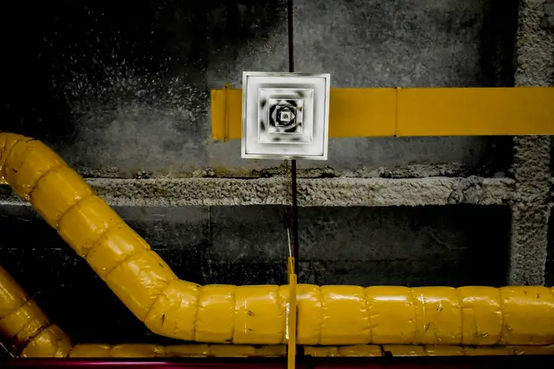

5 Tips Perawatan dan Pembersihan Ducting AC Sentral
Prosedur menjaga kebersihan saluran udara AC demi sirkulasi udara bersih dan hemat konsumsi energi.
Panduan Lengkap Perawatan dan Cleaning Air Duct Gedung
Kebersihan saluran udara menentukan kualitas udara indoor (IAQ) serta efisiensi konsumsi listrik unit pendingin gedung Anda. Simak standar pembersihan sesuai regulasi internasional.

- 1. Indikator Saluran Udara Mengalami Penumpukan Debu
- 2. Dampak Buruk Saluran Kotor bagi Penghuni & Tagihan Listrik
- 3. Standar Interval Rutin Pembersihan Sesuai NADCA ACR
- 4. Metode Rotary Brush & Vacuum HEPA Bertekanan Negatif
- 5. Urgensi Pemasangan Pintu Akses (Access Door) pada Titik Kritis
- 6. Verifikasi Kualitas Udara Pasca-Cleaning
Indikator Saluran Udara Mengalami Penumpukan Debu
Saluran udara HVAC yang tertutup di atas plafon seringkali luput dari pengawasan manajemen gedung hingga timbul keluhan dari para penyewa. Tanda awal paling jelas terlihat dari munculnya garis jelaga hitam atau lingkaran debu pekat di sekitar kisi-kisi diffuser AC plafon. Partikel debu ini terdorong keluar bersama hembusan angin dan mengotori langit-langit ruangan.
Indikator kedua adalah timbulnya aroma apak atau bau tidak sedap ketika unit pendingin udara pertama kali dinyalakan di pagi hari. Bau ini berasal dari akumulasi debu organik, bangkai serangga, dan kelembaban mikro yang menumpuk di dasar saluran ducting. Kondisi ini menjadi sinyal mendesak bahwa saluran udara telah terkontaminasi dan membutuhkan sanitasi.
Indikator ketiga adalah penurunan volume hembusan udara (CFM) di beberapa ruangan meskipun kecepatan kipas blower telah disetel maksimal. Tumpukan kerak debu yang menebal di dinding dalam saluran meningkatkan hambatan gesek udara (friction loss) secara signifikan. Akibatnya, distribusi udara dingin menjadi tidak seimbang dan suhu ruangan terasa gerah.
Dampak Buruk Saluran Kotor bagi Penghuni & Tagihan Listrik
Kualitas udara dalam ruangan (Indoor Air Quality / IAQ) berbanding lurus dengan kebersihan saluran distribusi udara HVAC gedung Anda. Saluran yang kotor menjadi pemicu utama sindrom gedung sakit (Sick Building Syndrome) yang menyebabkan karyawan sering mengalami sakit kepala, iritasi mata, dan kelelahan kronis. Menjaga kebersihan saluran udara merupakan bagian dari tanggung jawab kesehatan kerja.
Dari aspek finansial operasional, lapisan debu tebal di dalam saluran udara dan kisi-kisi koil pendingin meningkatkan konsumsi daya listrik unit AC hingga 15% - 25%. Motor blower harus bekerja ekstra keras untuk mendorong debit udara melewati saluran yang tersumbat partikel debu. Peningkatan beban kerja ini juga memperpendek usia pakai kompresor dan motor penggerak AHU gedung.
Pada saluran pembuangan dapur komersial (kitchen exhaust duct), penumpukan uap lemak dan minyak masakan menimbulkan bahaya kebakaran yang sangat fatal. Percikan api dari kompor dapat membakar endapan minyak di dalam saluran dan merambat cepat ke seluruh lantai gedung. Oleh sebab itu, pembersihan rutin berkala merupakan keharusan mutlak.
Standar Interval Rutin Pembersihan Sesuai NADCA ACR
Standar internasional NADCA (National Air Duct Cleaners Association) standar ACR merekomendasikan inspeksi visual tahunan pada sistem saluran udara komersial. Untuk gedung perkantoran biasa, pembersihan menyeluruh disarankan dilakukan setiap 2 hingga 3 tahun sekali tergantung hasil inspeksi visual. Namun untuk gedung rumah sakit dan industri farmasi, jadwal pembersihan harus dilakukan lebih intensif setiap 6 hingga 12 bulan.
Pada saluran pembuangan exhaust restoran dan dapur komersial, frekuensi pembersihan ditentukan oleh intensitas operasional memasak. Dapur dengan volume penggorengan tinggi wajib melakukan pembersihan saluran setiap 3 bulan sekali sesuai pedoman NFPA 96. Kepatuhan terhadap jadwal ini menjadi syarat wajib perpanjangan polis asuransi kebakaran gedung komersial.
Aris Ducting menyediakan layanan konsultasi dan perencanaan jadwal pemeliharaan saluran udara gedung komersial dan industri. Tim teknisi kami akan melakukan penilaian awal tingkat kontaminasi saluran sebelum menentukan metode pembersihan yang paling tepat dan efisien bagi fasilitas Anda.
Metode Rotary Brush & Vacuum HEPA Bertekanan Negatif
Prosedur pembersihan modern wajib menggunakan prinsip tekanan negatif (negative pressure system) untuk mencegah debu berhamburan ke ruangan kerja. Mesin vacuum extraction bertenaga tinggi yang dilengkapi filter HEPA 99.97% dihubungkan ke salah satu ujung saluran udara. Sistem hisap ini mengisolasi zona pembersihan sehingga seluruh debu yang terangkat langsung terhisap masuk ke dalam tabung penampung.
Proses perontokan kerak debu dilakukan menggunakan sikat mekanis berputar (rotary brush) fleksibel yang digerakkan oleh motor pneumatik atau elektrik. Sikat berputar menyusuri seluruh lorong saluran ducting dan melepaskan kotoran membandel yang menempel pada dinding plat BJLS. Kecepatan putar dan kelembutan bulu sikat disesuaikan agar tidak merusak lapisan galvanis saluran.
Setelah proses penyikatan selesai, tahapan akhir adalah pengabutan cairan disinfektan ramah lingkungan (fogging sanitizer) ke dalam saluran. Bahan pembersih ini membunuh spora jamur, bakteri Legionella, dan kuman patogen tanpa meninggalkan residu beracun yang membahayakan pernapasan manusia. Saluran udara kembali higienis dan segar.
Urgensi Pemasangan Pintu Akses (Access Door) pada Titik Kritis
Ketiadaan pintu akses (access door) seringkali menjadi kendala utama dalam pemeliharaan saluran udara gedung bertingkat. Pintu akses adalah jendela bukaan khusus berengsel rapat yang dipasang pada dinding ducting untuk memudahkan inspeksi dan masuknya selang sikat pembersih. Titik pemasangan wajib berada di dekat damper, belokan elbow, dan sebelum unit koil pendingin.
Pintu akses harus dilengkapi karet gasket kedap udara dan kait pengunci kuat agar tidak menimbulkan kebocoran angin saat mesin beroperasi. Pada ducting yang berinsulasi, panel pintu akses juga harus dilapisi insulasi tebal yang setara guna mencegah titik embun kondensasi. Pemasangan pintu akses yang terencana akan menghemat biaya pembersihan secara drastis di kemudian hari.
Aris Ducting memproduksi berbagai ukuran pintu akses presisi dari plat baja galvanis tebal yang mudah dipasang pada saluran lama maupun baru. Tim instalator kami siap membantu penambahan pintu akses pada jalur ducting gedung Anda tanpa mengganggu aktivitas kerja kantor.
Verifikasi Kualitas Udara Pasca-Cleaning
Tahap akhir dari pembersihan saluran udara adalah verifikasi hasil pembersihan menggunakan kamera endoskopi inspeksi visual (duct inspection robot). Rekaman video sebelum dan sesudah pembersihan didokumentasikan sebagai bukti kepatuhan standar kebersihan kepada manajemen pengelola gedung. Hasil rekaman ini memastikan seluruh lorong saluran telah bersih dari tumpukan debu.
Pengujian kualitas udara indoor (Indoor Air Quality testing) dapat dilakukan untuk mengukur konsentrasi partikel debu PM2.5 dan PM10 di dalam ruangan pasca-cleaning. Dengan saluran udara yang bersih, efisiensi pendinginan ruangan meningkat pesat dan kesehatan karyawan terlindungi secara optimal. Percayakan pemeliharaan ducting gedung Anda kepada tenaga ahli Aris Ducting.
Aris Ducting menyediakan jasa instalasi pintu akses (access door), inspeksi saluran udara, serta peremajaan sistem ducting gedung komersial.
Konsultasi Layanan Instalasi Ducting